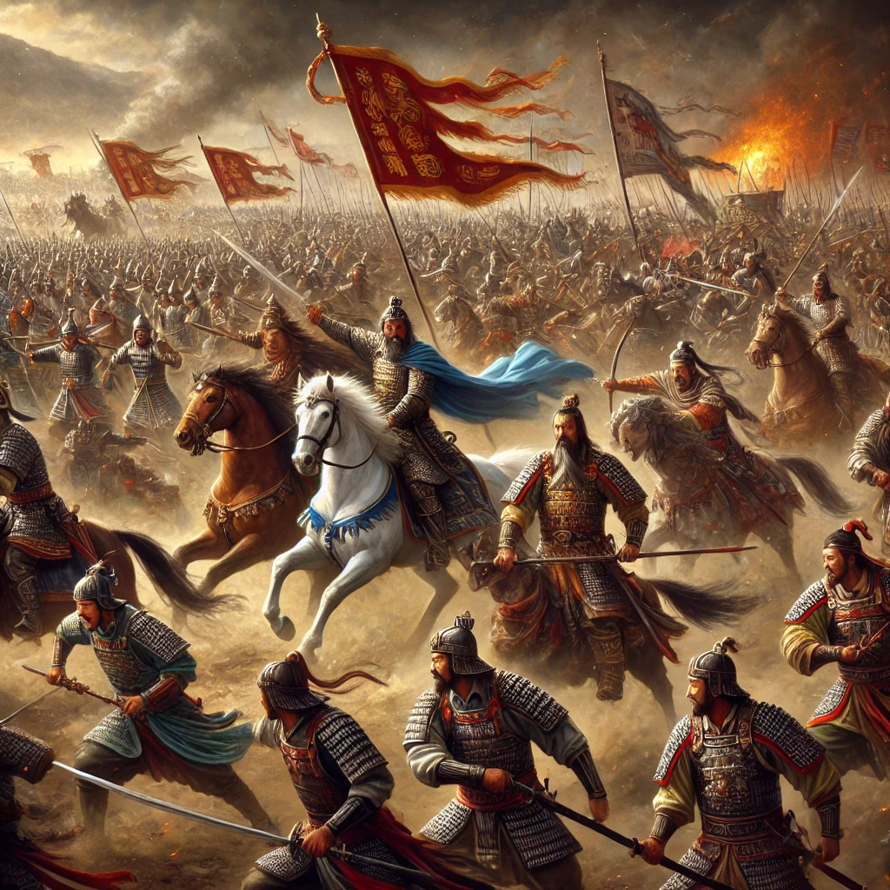

작가
나관중
출판일
2020년
감상평에 대한 AI그림
삼국지는 혼란스러운 시대 속에서 영웅들이 권모술수를 펼치며 패권을 다투는 이야기를 담은 역사서이자 전략서다. 유비, 조조, 손권 등 각 인물의 개성과 정치적 역량이 돋보이며, 시대의 흐름 속에서 인간 본성과 지혜의 중요성을 느낄 수 있다. 단순한 전쟁 이야기 이상으로 리더십과 인간관계를 깊이 고민하게 만드는 작품이다.

감상평에 대한 AI 감정 평가
이 평가는 삼국지에 대해 매우 긍정적이고 깊이 있는 분석을 제공합니다. 삼국지가 단순히 전쟁이나 정치적 싸움을 다루는 것이 아니라, 각 인물들의 개성과 전략, 그리고 시대적 배경을 통해 인간 본성과 리더십, 인간관계에 대한 깊은 통찰을 제시한다는 점을 잘 강조하고 있습니다. 특히, 유비, 조조, 손권 등 주요 인물들이 보여주는 정치적 역량과 그들이 처한 환경에서 펼치는 권모술수는 이 작품의 중요한 핵심이자 매력입니다. 이 평가를 통해 삼국지가 단순한 역사서 이상으로 리더십과 인간의 심리에 대한 고민을 유발하는 작품임을 잘 표현하고 있습니다.